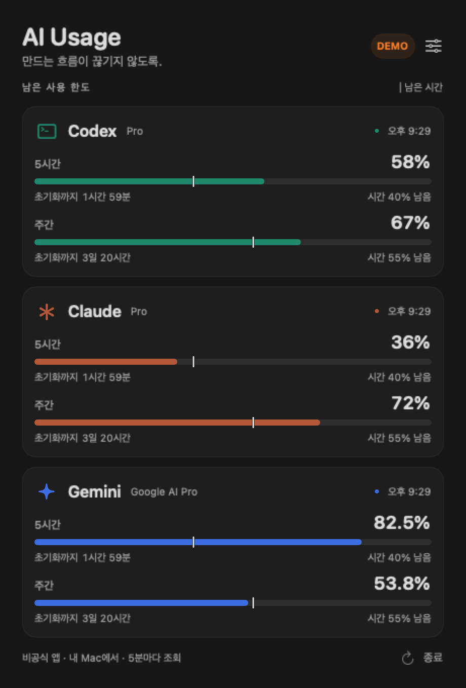

프로젝트/macOS 앱
Codex·Claude·Gemini 사용량을 한눈에: Mac 메뉴 막대 앱을 세 서비스로 확장했다
요즘 쓰는 AI가 또 늘었다. ChatGPT와 Claude를 같이 쓰고 있었는데, Gemini에 Argon이 나오면서 Gemini까지 쓰게 됐다.
이전에 만든 ChatGPT Usage는 Mac 메뉴 막대에서 Codex의 남은 한도와 초기화 시간을 보여주는 앱이었다. 직접 쓰기에는 꽤 편했는데, 이제 확인할 서비스가 세 개가 됐다.
“각각 열어보지 말고 한곳에서 보면 안 되나?”
그래서 기존 앱을 AI Usage라는 이름으로 확장하고 있다. 첫 대상은 내가 쓰는 Mac이다. Codex, Claude, Gemini의 남은 한도를 같은 화면에서 비교하는 작은 메뉴 막대 앱이다.
내 Mac에서 세 서비스의 실제 계정을 연결해 확인했다. 아직은 개발 베타라, 확인한 범위와 더 다듬어야 할 부분을 함께 적었다.
세 개를 넣되 복잡해지지는 않게
화면에 넣고 싶은 정보는 많지 않았다.
- 지금 한도가 얼마나 남았는지
- 언제 초기화되는지
- 남은 시간에 비해 너무 빨리 쓰고 있는지
Codex, Claude, Gemini를 위에서 아래로 배치하고, 숫자와 막대, 초기화 시간의 위치를 맞췄다. 서비스는 색으로 구분하되 숫자를 읽는 방식은 같게 했다. 한국어와 영어를 지원하고 Mac의 밝은 화면·어두운 화면에 맞춰 표시한다.

화면 구성을 보여주기 위한 예시 데이터다. 세 계정의 실시간 연결을 입증하는 화면은 아니다.
세 서비스를 합친 “총 65% 남음” 같은 숫자는 만들지 않았다. 서비스마다 한도가 다르고, 한쪽의 남은 한도를 다른 쪽에서 쓸 수도 없기 때문이다. 같은 화면에 놓고 각각 비교하면 충분하다.
사용량 막대에도 페이스메이커를 붙였다
기존 앱에서 마음에 들었던 기능은 그대로 가져왔다. 한도 막대 위에 남은 시간의 비율을 세로선으로 표시하는 방식이다.
예를 들어 한도는 30%, 이번 주 시간은 20%가 남았다면 균등하게 쓰는 페이스보다 10%p 여유가 있다. 반대로 한도 30%에 시간 60%가 남았다면, 시간에 비해 한도를 빠르게 사용한 상태다.
- 채워진 막대: 남은 한도
- 세로 기준선: 해당 기간의 남은 시간
막대가 기준선보다 길면 균등 사용 페이스보다 여유가 있다. 짧으면 더 빠르게 쓰고 있는 셈이다. 러닝에서 페이스메이커를 보듯이, 숫자 하나만 볼 때보다 감을 잡기 쉽도록 했다.
이 선은 제공사가 정한 하루 한도가 아니다. 실제로 받은 기간과 초기화 시각을 바탕으로 계산한 참고선이다. 날짜 정보가 없거나 오래된 측정값이면 비교선을 숨긴다.
이름이 비슷해도 같은 사용량은 아니었다
연결을 늘리면서 먼저 정리한 것은 “무엇의 한도를 보여줄 것인가”였다.
| 화면 |
표시하는 한도 |
| Codex |
ChatGPT 계정으로 로그인한 Codex의 구독 한도 |
| Claude |
Claude 구독의 세션·주간 한도와 확인 가능한 모델별 한도 |
| Gemini |
Argon 사용을 포함하는 Gemini 앱의 구독 한도 |
여기서 Codex 한도는 일반 ChatGPT 채팅 횟수와 다르다. Gemini 앱의 한도도 Gemini API나 Antigravity의 한도로 대신하면 안 된다. Argon을 사용한다고 해서 Gemini 화면의 모든 수치를 “Argon 전용 한도”라고 이름 붙일 수도 없다.
요금제 이름만 보고 한도를 추정하는 방식도 쓰지 않았다. 서버가 보내준 사용률과 초기화 시간을 그대로 받아 표시하는 쪽을 택했다. 제공사가 정수로 주는 값에 임의로 소수점을 만들어 붙이지 않고, 실제 소수값이 오는 경우에만 한 자리까지 보여준다.
로그인 정보는 브라우저에 두고, 사용량만 앱으로
Codex는 기존처럼 설치된 Codex의 로컬 app-server를 이용한다. Claude Code에는 구조화된 사용량을 요청하는 실험적 경로가 있어 함께 연결했다. 질문을 보내 모델을 실행하는 방식은 아니며, 사용량 조회에서 로컬 대화 기록 분석도 요청하지 않는다.
Claude와 Gemini의 웹 사용량을 가져오는 쪽은 Chrome 확장 프로그램으로 만들었다. 사용자는 평소처럼 각 서비스의 공식 사이트에 로그인하고, 확장 프로그램이 그 탭의 로그인 상태로 사용량을 조회한다.
앱으로 보내는 것은 서비스 이름, 사용률, 기간, 초기화 시각, 조회 시각이다. 서비스의 쿠키나 토큰, 이메일, 대화 내용은 Mac 앱으로 보내지 않는다. 확장 프로그램과 앱은 같은 Mac 안에서 연결하며, 중간에 별도의 외부 서버를 두지 않았다. 두 프로그램을 연결할 때는 별도의 페어링 코드를 쓴다.
이 구조에도 제약은 있다. 브라우저 연결은 Chrome이 실행 중이고 서비스에 로그인되어 있어야 갱신된다. 확장 0.3.1부터는 서비스 탭을 닫아도 5분마다 조회하며, 절전 중에는 조회가 지연될 수 있다. 웹 사용량 요청은 안정적인 공개 개발자 API가 아니어서, 서비스가 응답 형식을 바꾸면 연결 코드를 수정해야 할 수 있다. 그래서 연결 오류를 0% 사용이나 100% 남음으로 바꾸지 않고 상태를 따로 보여준다.
지금 확인한 것과 남은 것
macOS 앱과 Chrome 확장 프로그램을 구현하고 116개 자동 검증을 통과했다. 실제로 값이 0인 경우와 값이 없는 경우를 구분하는지, 소수 사용률과 초기화 시각이 유지되는지, 잘못된 연결 메시지를 거부하는지 등을 확인했다.
내 Mac에서는 Codex·Claude·Gemini 세 서비스의 실제 연결을 확인했다. Claude와 Gemini는 로그인된 공식 사용량 화면과 앱에 표시된 한도·초기화 시각을 대조했다. 공개한 스크린샷은 화면 구성을 보여주기 위한 예시 데이터다. 다른 계정이나 Mac에서도 같은 과정으로 연결되는지는 더 확인해야 한다.
Claude Code의 사용량 요청은 응답을 받았지만, 이번 계정에서는 한도 데이터가 비어 있었다. 이 경우 수치를 만들어 표시하지 않고 브라우저 연결을 이용했다. CLI 경로는 계속 실험적 기능으로 남겨 두었다.
설치 과정도 아직 개발자용에 가깝다. 확장 프로그램은 Chrome 웹 스토어에 등록하지 않았고, 압축 해제된 확장 프로그램을 불러오는 방식이다. Mac 앱 역시 Apple 공증을 받지 않은 초기 버전이다. 처음 쓰는 사람이 연결하는 과정부터 더 다듬어야 한다.
이미 있는 앱에서 배운 점, 내가 더 만들어볼 것
비슷한 앱이 아주 없는 것은 아니다. CodexBar는 이미 여러 서비스의 사용량을 지원한다. 이번 Gemini 웹 사용량 연동을 조사할 때도 공개된 구현과 문서가 도움이 됐다.
이번에 만들고 싶은 것은 세 서비스를 편하게 비교하는 작은 앱이다. 기능을 계속 늘리기보다는, 한눈에 읽히는 화면과 시간 기준선, 한국어 안내, 연결 상태를 이해하기 쉬운 쪽에 집중하려고 한다.
개발과 검증에는 Codex의 도움을 받았다. 특히 사용률만 받아 화면에 넣는 것보다, 그 숫자가 어느 제품의 한도인지와 연결이 실패했을 때 무엇을 보여줄지를 정하는 일이 더 중요했다.
내 Mac에서 사용하는 단계까지 왔으니, 이제 다른 Mac 환경에서도 피드백을 받아볼 생각이다. Windows는 그다음이다. 사용량 데이터를 정리하는 부분과 Mac 화면을 나눠 두었지만, Windows 앱은 아직 만들지 않았다.
GitHub에서 베타 코드와 현재 연결 방법 보기
참고한 자료
작성 기준: 2026년 10월 17일. 연결 방식과 지원 범위는 제공사의 업데이트에 따라 달라질 수 있다.